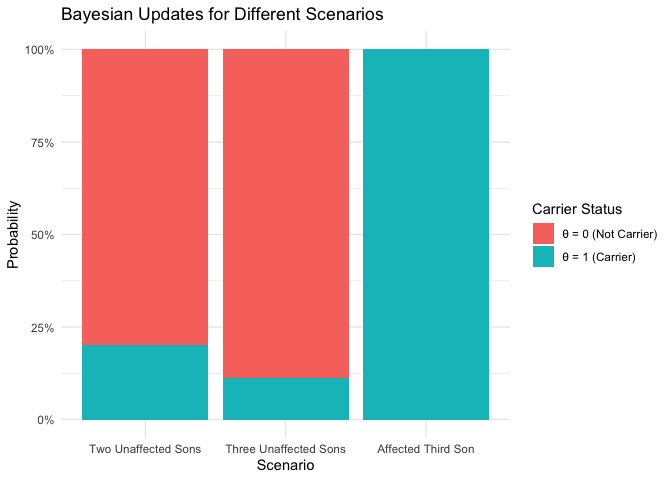

Bayesian: Discrete probability example in genetics
Last update:
## [1] "2024-11-29"
This doc was built with: rmarkdown::render("bayesian_genetic_carrier.Rmd", output_file = "../pages/bayesian_genetic_carrier.md")
Inference about Genetic Status
Background
Human males have one X-chromosome and one Y-chromosome, whereas females have two X-chromosomes, each chromosome being inherited from one parent. Hemophilia is a disease that exhibits X-chromosome-linked recessive inheritance, meaning that a male who inherits the gene that causes the disease on the X-chromosome is affected, whereas a female carrying the gene on only one of her two X-chromosomes is not affected. The disease is generally fatal for women who inherit two such genes, and this is rare, since the frequency of occurrence of the gene is low in human populations.
Prior Distribution
Consider a woman who has an affected brother. This implies her mother must be a carrier of the hemophilia gene, possessing one ‘good’ and one ‘bad’ hemophilia gene. We also know her father is not affected; therefore, the woman herself has a fifty-fifty chance of being a carrier of the gene. The unknown quantity of interest, the state of the woman, has just two possible values: - \(\theta = 1\): The woman is a carrier of the gene. - \(\theta = 0\): The woman is not a carrier of the gene.
Based on the information provided thus far, the prior distribution for the unknown \(\theta\) can be expressed with equal probabilities for being a carrier or not:
\[\Pr(\theta = 1) = \Pr(\theta = 0) = 0.5\]Data Model and Likelihood
The data used to update the prior information consist of the affection status of the woman’s sons. Suppose she has two sons, neither of whom is affected. Let \(y_i = 1\) or \(0\) denote an affected or unaffected son, respectively. The outcomes of the two sons are exchangeable and, conditional on the unknown \(\theta\), are independent; we assume the sons are not identical twins.
The likelihood function based on the outcome where neither son is affected is given by:
- \[\Pr(y_1 = 0, y_2 = 0 | \theta = 1) = (0.5)(0.5) = 0.25\]
- \[\Pr(y_1 = 0, y_2 = 0 | \theta = 0) = (1)(1) = 1\]
These expressions arise from the fact that if the woman is a carrier (\(\theta = 1\)), each of her sons has a 50% chance of inheriting the gene and thus being affected. Conversely, if she is not a carrier (\(\theta = 0\)), the probability is close to 1 that her sons will be unaffected. We ignore the small probability of being affected even if the mother is not a carrier for this example.
Posterior Distribution After Observing Two Unaffected Sons
Using Bayes’ rule, we combine the likelihoods with the prior probabilities to determine the posterior probability that the woman is a carrier, denoted as \(\theta = 1\), given the data \(y = (y_1 = 0, y_2 = 0)\):
\[\Pr(\theta = 1 | y_1, y_2) = \frac{\Pr(y_1 = 0, y_2 = 0 | \theta = 1) \Pr(\theta = 1)}{\Pr(y_1 = 0, y_2 = 0 | \theta = 1) \Pr(\theta = 1) + \Pr(y_1 = 0, y_2 = 0 | \theta = 0) \Pr(\theta = 0)}\]Substituting the values:
\[\Pr(\theta = 1 | y_1, y_2) = \frac{0.25 \times 0.5}{0.25 \times 0.5 + 1 \times 0.5} = \frac{0.125}{0.625} = 0.20\]Or more simply: \(\Pr(\theta = 1 | y) = \frac{\Pr(y | \theta = 1) \Pr(\theta = 1)}{\Pr(y | \theta = 1) \Pr(\theta = 1) + \Pr(y | \theta = 0) \Pr(\theta = 0)}\)
Substituting the values:
\[\Pr(\theta = 1 | y) = \frac{0.25 \times 0.5}{0.25 \times 0.5 + 1 \times 0.5} = \frac{0.125}{0.625} = 0.20\]This calculation intuitively suggests that it is less probable for the woman to be a carrier if her children are unaffected. Bayes’ rule provides a formal mechanism for this correction. The results can also be expressed in terms of odds:
- Prior odds: \(0.5 / 0.5 = 1\)
- Likelihood ratio (based on the information about her two unaffected sons): \(0.25 / 1 = 0.25\)
- Posterior odds: \(1 \times 0.25 = 0.25\)
Converting back to probability:
\[\frac{0.25}{1 + 0.25} = 0.2\]The posterior probability that the woman is a carrier is thus 20%, which adjusts the prior belief based on the outcomes of her sons. Conversely, the probability that she is not a carrier is updated to:
\[\Pr(\theta = 0 | y_1, y_2) = 0.80\]This posterior probability now serves as the new prior for further analysis if additional data is considered.
Adding More Data
A key aspect of Bayesian analysis is the ease with which sequential analyses can be performed. For example, suppose that the woman has a third son, who is also unaffected. The entire calculation does not need to be redone; rather, we use the previous posterior distribution as the new prior distribution, to update our belief about the woman’s carrier status.
Updating with an Unaffected Third Son
If the third son is also unaffected, the likelihood for \(\theta = 1\) is $0.5$ (probability that the son does not inherit the gene if the mother is a carrier). The likelihood for \(\theta = 0\) (probability that the son does not inherit the gene if the mother is not a carrier) remains 1, given the genetic condition being recessive.
Using the posterior from the previous calculation as the new prior, the Bayesian update would be:
\[\Pr(\theta = 1 | y_1, y_2, y_3) = \frac{\Pr(y_3 = 0 | \theta = 1) \times \Pr(\theta = 1 | y_1, y_2)}{\Pr(y_3 = 0 | \theta = 1) \times \Pr(\theta = 1 | y_1, y_2) + \Pr(y_3 = 0 | \theta = 0) \times \Pr(\theta = 0 | y_1, y_2)}\]Plugging in the values:
\[\Pr(\theta = 1 | y_1, y_2, y_3) = \frac{0.5 \times 0.20}{0.5 \times 0.20 + 1 \times 0.80} = \frac{0.10}{0.10 + 0.80} = \frac{0.10}{0.90} \approx 0.111\]Updating with an Affected Third Son
Conversely, if the third son is affected, the likelihood of him being affected given that his mother is a carrier (\(\theta = 1\)) is again 0.5. However, the likelihood of him being affected given that his mother is not a carrier (\(\theta = 0\)) is practically 0, considering the genetic condition is recessive and assuming we ignore the small mutation rate.
The update for the Bayesian analysis would therefore be:
\[\Pr(\theta = 1 | y_1, y_2, y_3) = \frac{\Pr(y_3 = 1 | \theta = 1) \times \Pr(\theta = 1 | y_1, y_2)}{\Pr(y_3 = 1 | \theta = 1) \times \Pr(\theta = 1 | y_1, y_2) + \Pr(y_3 = 1 | \theta = 0) \times \Pr(\theta = 0 | y_1, y_2)}\]Given the values:
\[\Pr(\theta = 1 | y_1, y_2, y_3) = \frac{0.5 \times 0.20}{0.5 \times 0.20 + 0 \times 0.80} = \frac{0.10}{0.10 + 0.00} = 1\]This result reflects the significant impact of observing an affected child in a scenario where the mother’s carrier status was uncertain. If the third son is affected, it conclusively indicates that the woman is a carrier of the hemophilia gene. The probability of the woman being a carrier thus becomes 1, showcasing the power of Bayesian updating when integrating decisive new evidence.
Dataset and visualisation
library(ggplot2)
# Data for two unaffected sons
all_probs <- data.frame(
Theta = c("θ = 1 (Carrier)", "θ = 0 (Not Carrier)"),
Probability = c(0.20, 0.80), # Posterior probabilities after observing two unaffected sons
Scenario = "Two Unaffected Sons"
)
# Data for three unaffected sons - update these probabilities based on your extended analysis
all_probs_three_sons <- data.frame(
Theta = c("θ = 1 (Carrier)", "θ = 0 (Not Carrier)"),
Probability = c(0.111, 0.889), # Update based on your analysis
Scenario = "Three Unaffected Sons"
)
# Data for third son affected - hypothetical scenario where the third son is affected
all_probs_affected_third_son <- data.frame(
Theta = c("θ = 1 (Carrier)", "θ = 0 (Not Carrier)"),
Probability = c(1, 0), # Hypothetical update if the third son is affected
Scenario = "Affected Third Son"
)
# Combine all data frames for unified plotting later
all_data <- rbind(
all_probs,
all_probs_three_sons,
all_probs_affected_third_son
)
all_data$Scenario <- factor(all_data$Scenario, levels = c("Two Unaffected Sons", "Three Unaffected Sons", "Affected Third Son"))
| Theta | Probability | Scenario |
|---|---|---|
| θ = 1 (Carrier) | 0.200 | Two Unaffected Sons |
| θ = 0 (Not Carrier) | 0.800 | Two Unaffected Sons |
| θ = 1 (Carrier) | 0.111 | Three Unaffected Sons |
| θ = 0 (Not Carrier) | 0.889 | Three Unaffected Sons |
| θ = 1 (Carrier) | 1.000 | Affected Third Son |
| θ = 0 (Not Carrier) | 0.000 | Affected Third Son |
all_data - Probabilities table
plot_bayesian_updates <- function(data) {
ggplot(data, aes(x = Scenario, y = Probability, fill = Theta)) +
geom_bar(stat = "identity", position = "fill") +
scale_y_continuous(labels = scales::percent_format()) +
labs(x = "Scenario", y = "Probability", fill = "Carrier Status") +
ggtitle("Bayesian Updates for Different Scenarios") +
theme_minimal()
}
# Plotting the combined data
plot_bayesian_updates(all_data)
